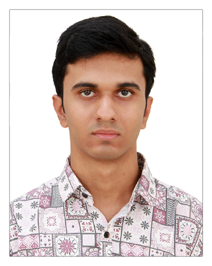
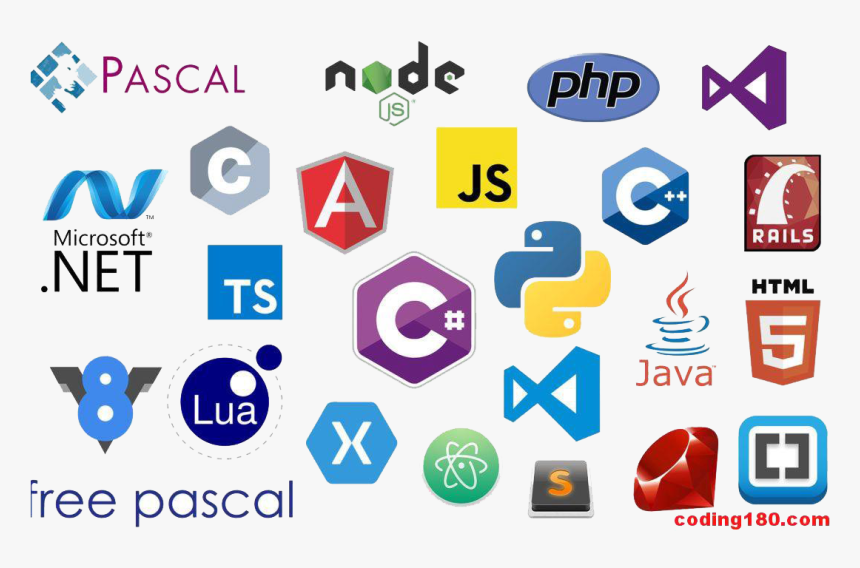

Hello, I'm Anandanarayan P. I am a Computer Science student at Amrita Vishwa Vidyapeetham, interested in web development and programming.
My hometown is Thiruvalla in Pathanamthitta district of Kerala. I finished my whole schooling at the Christ Central School in Thiruvalla. Currently I am a second semester student at Amrita Vishwa Vidyapeetham in CSE branch.I enjoy learning programming languages and building small projects using Python,Java,HTML and CSS.I aim to build a strong career in the field of software development by continuously improving my technical and problem-solving skills. My goal is to become a proficient full-stack developer who can design and develop efficient, scalable, and user-friendly applications. I am particularly interested in working on real-world projects that create meaningful impact and solve practical problems. In the long term, I aspire to work in a challenging environment where I can contribute to innovative solutions, collaborate with skilled professionals, and keep learning emerging technologies to stay relevant in the industry.

I have a strong interest in web development and programming, especially in understanding how different technologies work together to build complete applications. I enjoy exploring HTML, CSS, Java, and Python, and I am always curious to learn new tools and frameworks that can enhance my development skills. Apart from coding, I am interested in problem-solving and logical thinking, which helps me approach challenges in a structured way. I also like experimenting with small projects, improving user interface designs, and understanding how software can be made more efficient and user-friendly.
One of my key strengths is my ability to learn new concepts quickly and adapt to different technologies. I am a patient and focused learner who enjoys understanding the fundamentals before applying them. I am also a good team player and can collaborate effectively when working on group projects. Additionally, I have a strong interest in improving my coding practices by writing clean, readable, and structured code. My willingness to take initiative and consistently improve myself helps me grow both technically and personally.
Have been teammate in creating an object recognition project using Teachable Machine(similar to provided project) in higher secondary.
View ProjectHave also been part of Hostel Management project using python during higher secondary(similar to the provided project)
View ProjectEmail : anandanarayanp2006@gmail.com
GitHub : anandanarayanp2006-blip